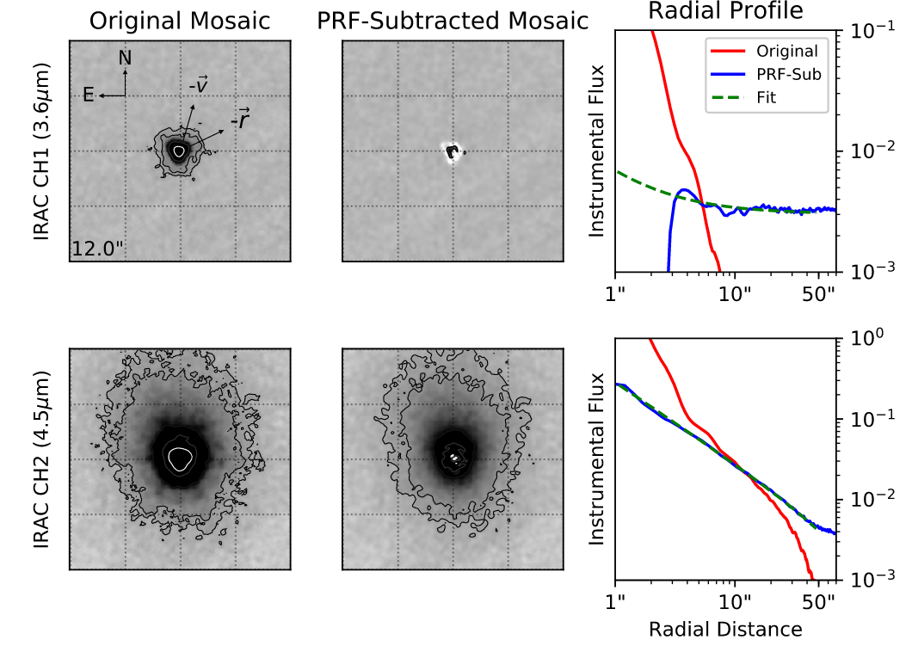

Don Quixote was discovered in 1983 and although it has a perfectly comet-like orbit, no cometary activity (a tail or a coma around the object) have been observed. According to protocol, the object was listed as an asteroid.
In 2009, we found from observations with the now defunct Spitzer Space Telescope that there actually is a faint coma around Don Quixote that most likely consists of molecular band emission from either CO or CO2. This is discussed in detail here and in this paper.
At that time, it was unclear whether the observed activity was just a singular event (e.g., triggered by a recent impact), or whether the object is recurrently active like an active comet.
{kind=link}

In 2017, Don Quixote was coming back from its trip around the Sun, providing us with a new opportunity to observe it, and guess what… it was active again. We were able to observe the same molecular band emission from CO and CO2 that we observed in 2009, and - more importantly - for the first time we observed activity in the optical wavelengths, which is most likely to be sunlight reflected by dust particles. All results from our observations are presented by
So, why is this interesting? It is interesting because what we observed in 2009 was not a unique event. Don Quixote seems to be recurrently active, but in a very faint way, comparable to the faintest observed active comets. Thus, Don Quixote is most likely an active comet, too, implying that it has indeed a reservoir of volatiles, consisting of CO or CO2 and - potentially - water.
Systematic Characterization of Potentially Active Asteroids
The case of Don Quixote serves as a reminder that asteroidal appearance and cometary activity are not exclusive states. Main belt comets - or Active Asteroids - are a population of putative main belt asteroids that exhibit periodic or recurrent comet-like activity. Just like Don Quixote, some of them have been known as asteroids for many years and then suddenly show activity. But unlike Don Quixote, most of these active asteroids do not share a cometary origin. Their activity can be triggered by a number of different mechanisms.
Although most of these mechanisms are not fully understood, enough is known about them to identify asteroids that are likely to exhibit activity as a result of one or more of these mechanisms acting upon them.
In 2015, I started an observing program that observed asteroids from two target populations, dormant comets and near-Sun asteroids. Dormant comets are objects similar to Don Quixote: they move on exceptionally comet-like orbits, but have never shown activity before. Since they might be of cometary origin, they might contain large volatile reservoirs, which can have implications for the origin of terrestrial water and for future resource utilization. Near-Sun asteroids have very close encounters with the Sun, which makes them subject to catastrophic disruption. The goal of this study was to systematically characterize dormant comets and near-Sun asteroids, as well as to find other objects like Don Quixote or active near-Sun asteroids.
Observations
Observations were carried out with a range of telescopes, most notably the Vatican Advanced Technology Telescope and the Lowell Observatory’s Discovery Channel Telescope. In total, I spent about 60 nights on the VATT and about 30 nights on other telescopes for this program.
Results
My observations resulted in two major findings:
- I was able to measure accurate colors of my targets, which in turn enabled me to derive probabilistic taxonomic classifications with the help of machine learning. As I found in my previous study on dormant comets, only about 50% of asteroids on comet-like orbits also have comet-like surface compositions. Interestingly, all near-Sun asteroids in my sample turn out to be non-primitive, which supports the hypothesis that primitive asteroids disrupt more easily than non-primitives.
- The only target in both my samples showing activity during this project was - guess who - Don Quixote. None of the other targets showed extended emission or enhanced brightness.
All results are discussed in detail by
Conclusions
It took me almost a decade to show that Don Quixote is a real comet. I was hoping to find other active asteroids - dormant comets or near-Sun asteroids - but unfortunately, I did not. Don Quixote might be unique in being an active comet hiding among inert asteroids.
And that is basically my astronomical legacy. Now it is up to the next generation of astronomers to find out more about dormant comets and Don Quixote!
Resources
-
Mommert, M., Hora, J. L., Trilling, D. E., Biver, N., Wierzchos, K., Harrington Pinto, O., Agarwal, J., Kim, Y., McNeill, A., Womack, M., Knight, M. M., Polishook, D., Moskovitz, N., Kelley, M. S. P. Smith, H. A. (2020), “Recurrent Cometary Activity in Near-Earth Object (3552) Don Quixote”, The Planetary Science Journal, 1, 12, publication (open access)
-
Mommert, M., Trilling, D. E., Hora, J. L., Lejoly, C., Gustafsson, A., Knight, M., Moskovitz, N. and Smith, H. A. (2020), “Systematic Characterization of and Search for Activity in Potentially Active Asteroids”, The Planetary Science Journal, 1, 10, publication (open access)